GraphViz
Simple command
- With
graphivizpython module
import graphviz
dot_data = """
// The Round Table
digraph {
A [label="King Arthur"]
B [label="Sir Bedevere the Wise"]
L [label="Sir Lancelot the Brave"]
A -> B
A -> L
B -> L [constraint=false]
}
"""
graph = graphviz.Source(dot_data)
graph
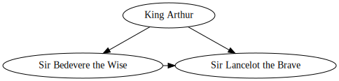
- With command line
!dot -Tpng ./assets/source.dot -o ./assets/source.png
Some examples
Basic
- graph
No direction
graph {
hello -- world;
}
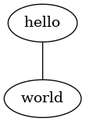
- digraph
oriented graph
graph {
hello -> world;
}
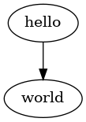
- digraph oriented AND edge in color
digraph {
rankdir=LR;
hello [ label = "Hello" ];
hello -> world [ color="orange", penwidth=3.0 ];
}
- digraph with font
digraph {
Tinos [ fontname="Tinos" ];
Handlee [ fontname="Handlee" ];
"Sedgwick Ave" [ fontname="Sedgwick Ave" ];
"*also Sedgwick*";
}
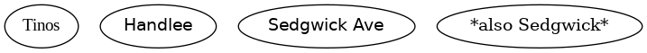
- digraph custom edge
digraph {
node [ shape=square ];
edge [ style=dashed ];
see -> think -> do;
}
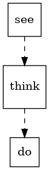
Simple Graph
graph {
a -- b;
b -- c;
c -- d;
d -- e;
e -- f;
a -- f;
a -- c;
a -- d;
a -- e;
b -- d;
b -- e;
b -- f;
c -- e;
c -- f;
d -- f;
}
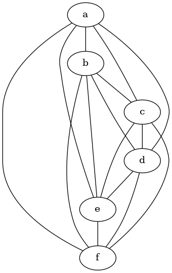
Full digraph
import graphviz
dot_data = """
digraph {
a -> b[label="0.2",weight="0.2"];
a -> c[label="0.4",weight="0.4"];
c -> b[label="0.6",weight="0.6"];
c -> e[label="0.6",weight="0.6"];
e -> e[label="0.1",weight="0.1"];
e -> b[label="0.7",weight="0.7"];
}
"""
graphviz.Source(dot_data)
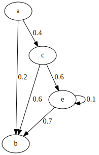
Showing A path
import graphviz
dot_data = """
graph {
a -- b[color=red,penwidth=3.0];
b -- c;
c -- d[color=red,penwidth=3.0];
d -- e;
e -- f;
a -- d;
b -- d[color=red,penwidth=3.0];
c -- f[color=red,penwidth=3.0];
}
"""
graphviz.Source(dot_data)
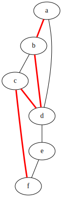
Subgraph
import graphviz
dot_data = """
digraph {
subgraph cluster_0 {
label="Subgraph A";
a -> b;
b -> c;
c -> d;
}
subgraph cluster_1 {
label="Subgraph B";
a -> f;
f -> c;
}
}
"""
graphviz.Source(dot_data)
Complex digraph
import graphviz
dot_data = """
digraph G {
size ="4,4";
main [shape=box]; /* this is a comment */
main -> parse [weight=8];
parse -> execute;
main -> init [style=dotted];
main -> cleanup;
execute -> { make_string; printf}
init -> make_string;
edge [color=red]; // so is this
main -> printf [style=bold,label="100 times"];
make_string [label="make a\nstring"];
node [shape=box,style=filled,color=".7 .3 1.0"];
execute -> compare;
}
"""
graphviz.Source(dot_data)
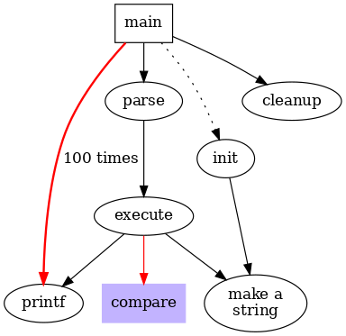
Complex label
digraph G {
a -> b -> c;
b -> d;
a [shape=polygon,sides=5,peripheries=3,color=lightblue,style=filled];
c [shape=polygon,sides=4,skew=.4,label="hello world"]
d [shape=invtriangle];
e [shape=polygon,sides=4,distortion=.7];
}
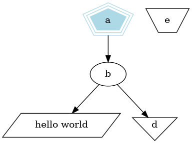
Advanced Graphs
Edge connection
Use <angle-brackets> to connect edge
digraph {
rankdir=LR;
node [ shape=record ];
struct1 [
label = "a|b|<port1>c";
];
struct2 [
label = "a|{<port2>b1|b2}|c";
];
struct1:port1 -> struct2:port2 [ label="xyz" ];
}
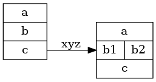
Clusters (or subgraph)
You can group related nodes by putting them in a subgraph whose name begins with cluster_.
digraph {
node [ fontname="Handlee" ];
subgraph cluster_frontend {
label="*Frontend*";
React;
Bootstrap;
}
subgraph cluster_backend {
label="*Backend*";
expressjs;
"aws-sdk";
}
React -> expressjs;
expressjs -> "aws-sdk";
}
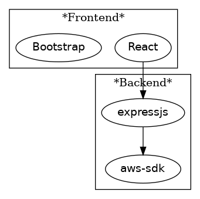